HarmonyOS Code Workshop is a large-scale code project and best practice based on developer technology evolution. It is rooted in the developer technology map and demonstrates HarmonyOS UX design, key experience features, ecosystem scenarios, and common development scenarios. In addition to running on phones, it supports Pad and PC/2-in-1 devices through the "one-time development, multi-device deployment" principle. The following briefly describes the multi-device adaptation process.
The overall multi-device app development process consists of UX design -> project management -> page development.
The following sections describe multi-device development for HarmonyOS Code Workshop from the perspectives of UX design, project management, and page development.
HarmonyOS Code Workshop uses the "layered architecture design rules" recommended for multi-device development to organize common (common capability layer), feature (basic feature layer), and product (product customization layer) directories.
├─common // Common capability module ├─features // Basic feature layer │ ├─commonbusiness // Common business capability module │ ├─componentlibrary // Component module │ ├─devpractices // Sample module │ ├─exploration // Event module │ └─mine // Mine └─products // Product customization layer └─phone
breakpoints use the application window width as the basis for dividing the window into different ranges, or breakpoints. Developers can implement different page layouts for different ranges as needed to solve multi-device UX layout problems. The breakpoint feature is further divided into horizontal and vertical breakpoints. When using breakpoints for multi-device adaptation, developers do not need to focus on device types to achieve adaptive UI layouts across devices. For details about vertical and horizontal breakpoints, see Multi-Device Breakpoint Development Practice.
The component list page is the app entry page. It primarily displays component cards and provides users with entry points for different components. It mainly consists of a tab area and a content area. The tab area is at the bottom of the page on phones and unfolded foldable devices, and on the left side of the page on Pads. The content area displays different numbers of columns depending on the device size. See the table below for details.
|
sm |
md |
lg |
|---|---|---|
|
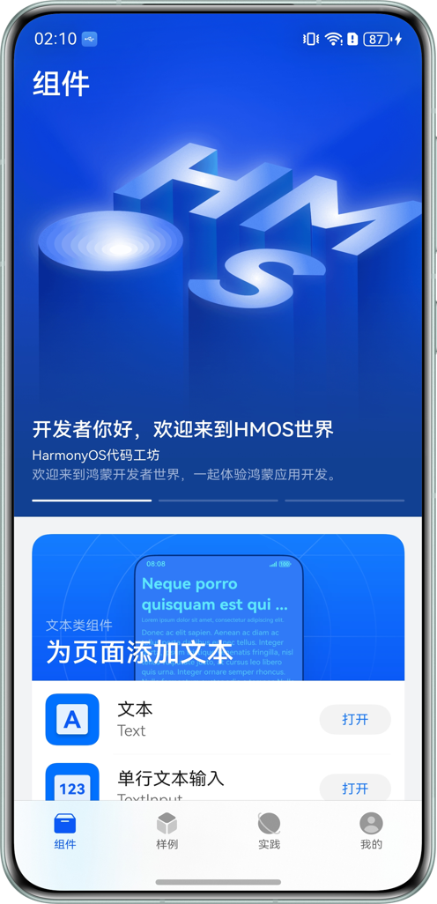 |
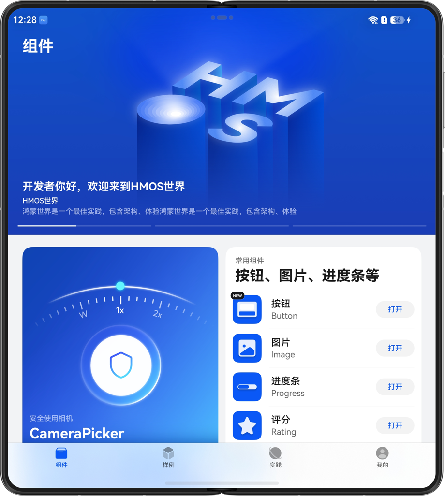 |
Tab Area Adaptation
The page uses a vertical layout on phones, with the content area above and the tabs at the bottom. On unfolded foldable devices and Pads, the tabs and content area use a horizontal layout. Therefore, the page uses the Tabs component and changes the tabBar position based on the breakpoint value.
// products/phone/src/main/ets/page/MainPage.ets
Tabs({ controller: this.tabController, index: this.currentIndex }) {
TabContent() {
ComponentListView()
}
.tabBar(this.TabItemBuilder(TABS_LIST[TabBarType.HOME]))
// ...
}
.vertical(this.globalInfoModel.currentBreakpoint === BreakpointTypeEnum.LG)
.barPosition(this.globalInfoModel.currentBreakpoint === BreakpointTypeEnum.LG ? BarPosition.Start :
BarPosition.End)
.barHeight(this.globalInfoModel.currentBreakpoint === BreakpointTypeEnum.LG ? '50%' :
this.globalInfoModel.naviIndicatorHeight + CommonConstants.TAB_BAR_HEIGHT)
.barOverlap(this.globalInfoModel.currentBreakpoint === BreakpointTypeEnum.LG ? false : true)
Content Area Adaptation
The content area of the component list page uses a list layout on phones. On unfolded foldable devices and Pads, it has a full-width banner at the top, full-width items at the bottom, and a waterfall flow in the middle. Therefore, the WaterFlow container is used for the layout, with WaterFlowSections implementing the waterfall groups. The top banner group and bottom item group each have one FlowItem and one column by default. The middle waterfall group uses 1, 2, or 3 columns at different breakpoints. After the component card data is fetched, the number of FlowItems in the waterfall group is set to the total number of cards.
The implementation is as follows:
// features/componentlibrary/src/main/ets/viewmodel/ComponentListViewModel.ets
private componentColumnSection: SectionOptions = {
itemsCount: 0,
crossCount: new BreakpointType({
sm: 1,
md: 2,
lg: 3
}).getValue(this.globalInfoModel.currentBreakpoint),
margin: $r('sys.float.padding_level8'),
}
// ...
protected updateFlowSection() {
this.componentColumnSection.itemsCount = this.state.cardData.length;
this.componentColumnSection.crossCount = crossCount;
this.state.sections.splice(0, this.state.sections.length(),
[this.bannerColumnSection, this.componentColumnSection, this.footerSection]);
}
Assign the componentColumnSection data configured above to the sections parameter of the WaterFlow component to display the waterfall groups.
// features/componentlibrary/src/main/ets/view/ComponentListView.ets
WaterFlow({
scroller: this.scroller,
sections: this.componentListState.sections
}) {
FlowItem() {
BannerCard({
// ...
})
}
Repeat(this.componentListState.cardData)
// ...
FlowItem() {
LoadingMoreItemBuilder(this.componentListState.loadingModel)
}
}
.rowsGap(new BreakpointType({
sm: $r('sys.float.padding_level8'),
md: $r('sys.float.padding_level6'),
lg: $r('sys.float.padding_level6')
}).getValue(this.globalInfoModel.currentBreakpoint))
// ...
}
The sample page displays sample information using multiple card forms. Individual samples use large-image cards and image-above-text cards, while sample collections use list cards and full-width horizontal scrolling cards. See the table below for the specific UX effects.
|
sm |
md |
lg |
|---|---|---|
|
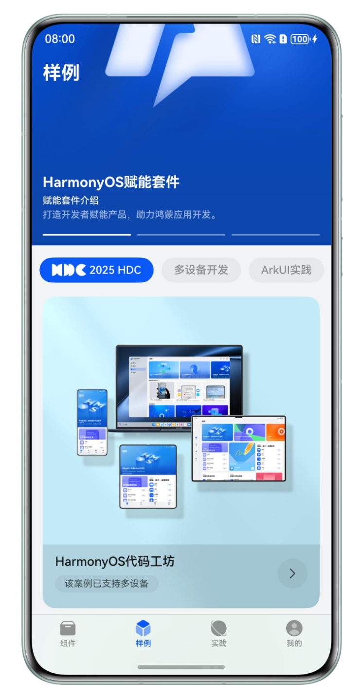 |
The page is displayed as a list on phones and has multiple styles on Pads. All cards have the same height, with widths occupying 1/3, 2/3, 3/3, and other proportions. Based on multi-device adaptation rules, the responsive-layout GridRow component is used to solve dynamic layout differences between cards on different devices.
On devices of different sizes, set the number of grid columns to 4, 8, or 12 according to the breakpoint, then set the number of columns occupied by each GridCol based on the sample card type and its width proportion on each device.
The implementation is as follows:
GridRow({
columns: { sm: ColumnEnum.SM, md: ColumnEnum.MD, lg: ColumnEnum.LG },
gutter: { y: $r('sys.float.padding_level8'), x: $r('sys.float.padding_level8') },
direction: GridRowDirection.Row
}) {
Repeat(this.sampleCategory.sampleCards)
.templateId((item: SampleCardData) => item.cardStyleType.toString())
.template(CardStyleTypeEnum.PICTURE_ABOVE_TEXT.toString(),
(repeatItem: RepeatItem<SampleCardData>) => {
GridCol({ span: CommonConstants.SPAN_4 }) {
// ...
}
})
.template(CardStyleTypeEnum.PICTURE.toString(), (repeatItem: RepeatItem<SampleCardData>) => {
GridCol({ span: { sm: CommonConstants.SPAN_4, md: CommonConstants.SPAN_4, lg: CommonConstants.SPAN_8 } }) {
// ...
}
})
// ...
}
The practice page displays article lists grouped by category. Article cards have different styles in each category. See the table below for the UX effects.
|
sm |
md |
lg |
|---|---|---|
|
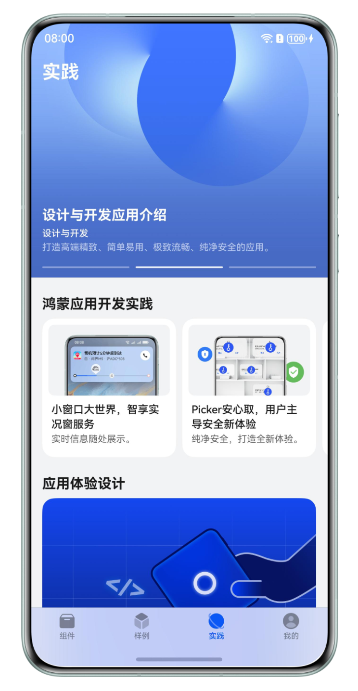 |
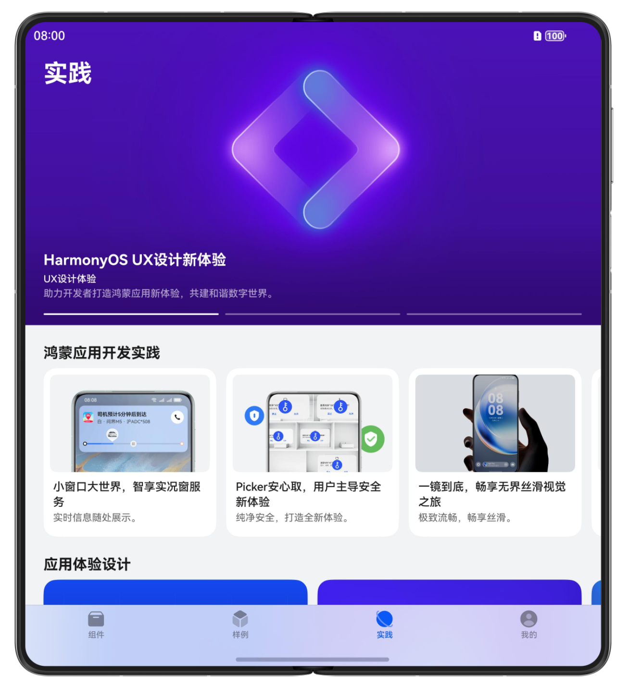 |
The UX effects show that the page uses an overall vertical layout. Article lists in each category are displayed as vertical lists on phones and use different horizontal layouts on unfolded foldable devices and Pads. Therefore, a vertical List layout is used overall, while the child cards in each category use Swiper and List components according to their styles.
The application architecture design module is used as an example below. On phones, it expands as a vertical list. On unfolded foldable devices, it is a horizontal list that displays two items fully and part of a third item at a fixed width. Based on these characteristics, the Swiper component is used for the layout.
// features/exploration/src/main/ets/component/ArchitectureCard.ets
Swiper() {
// ...
}
.nextMargin(new BreakpointType<Length>({
sm: 0,
md: $r('sys.float.padding_level6'),
lg: $r('sys.float.padding_level6')
}).getValue(this.globalInfoModel.currentBreakpoint))
.size(this.globalInfoModel.currentBreakpoint === BreakpointTypeEnum.SM ?
{ height: DiscoveryConstant.ARCHITECTURE_ITEM_HEIGHT * this.discoverContents.length } :
{ height: $r('app.float.architecture_item_height') })
.disableSwipe(this.globalInfoModel.currentBreakpoint === BreakpointTypeEnum.SM) // Expand all items in the vertical layout; swiping is unnecessary
.vertical(this.globalInfoModel.currentBreakpoint === BreakpointTypeEnum.SM) // Use a vertical layout on phones and horizontal swiping on unfolded foldable devices and Pads
.displayCount(
new BreakpointType({
sm: this.discoverContents.length, // When swiping vertically, display the total number of items in the data source
md: CommonConstants.LANE_MD,
lg: CommonConstants.LANE_LG
}).getValue(this.globalInfoModel.currentBreakpoint)
)
The component detail page contains a component preview area, a component property adjustment area, sample code, and related recommendations. See the table below for the specific effects.
|
sm |
md |
lg |
|---|---|---|
|
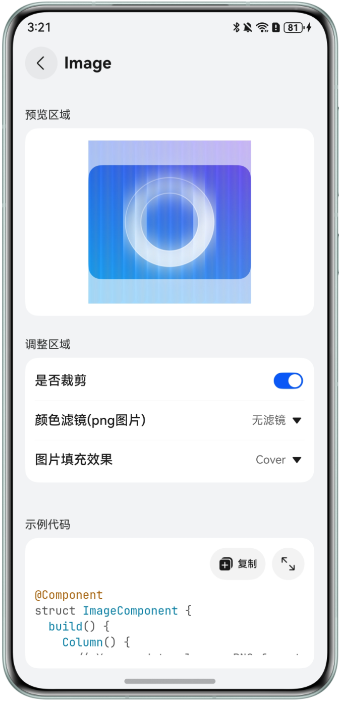 |
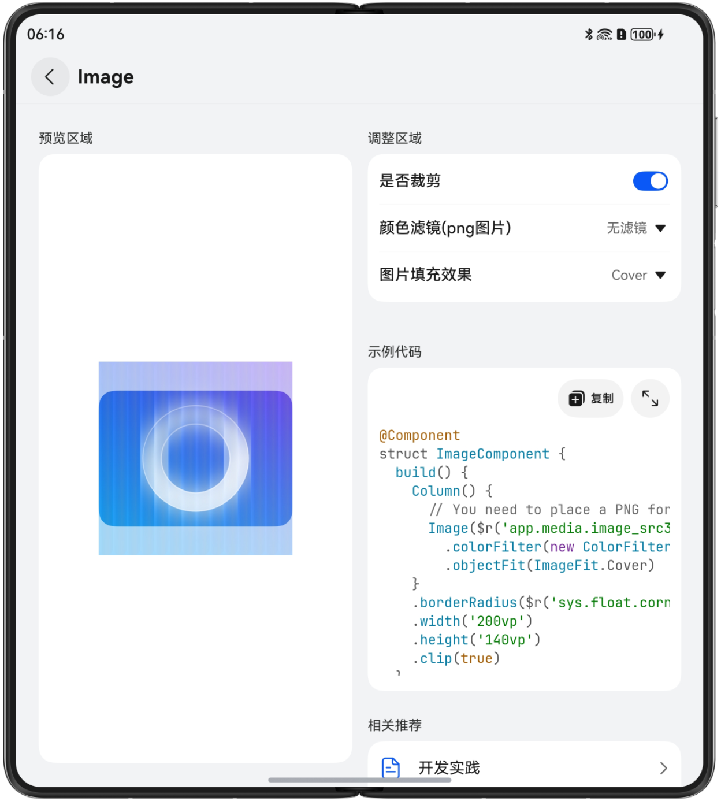 |
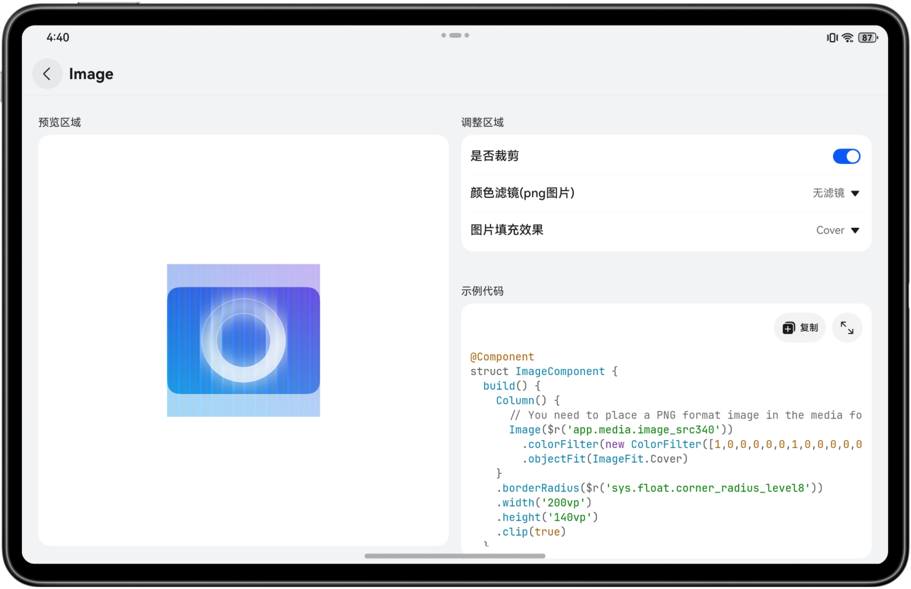 |
The page uses a vertical layout on phones. On unfolded foldable devices and Pads, the component preview area and other areas use a horizontal layout. Therefore, the overall page layout uses the Flex component to flexibly set the layout direction on devices of different sizes.
Divide the page content into a component preview area and another area. Use a vertical layout on phones by setting the direction parameter of the Flex component to FlexDirection.Column. On unfolded foldable devices and Pads, set direction to FlexDirection.Row to implement a horizontal layout.
// features/componentlibrary/src/main/ets/component/DetailContentView.ets
Flex({
direction: this.globalInfoModel.currentBreakpoint === BreakpointTypeEnum.SM ? FlexDirection.Column :
FlexDirection.Row
}) {
Column() {
// ...
}
Column() {
// ...
}
}
In HarmonyOS Code Workshop, pages are displayed differently across devices, so the resources used must also change with the screen size. We recommend using media queries to obtain resources for adaptation, with the help of the breakpoint feature in media queries. Horizontal breakpoints are briefly introduced below.
Create the BreakpointType class and use the getValue() method to obtain the corresponding resource value. When using it, create different resource files and pass the resource values for the sm, md, and lg breakpoints to BreakpointType, producing different effects as the application window size changes.
// common/src/main/ets/util/BreakpointSystem.ets
export class BreakpointType<T> {
xs: T;
sm: T;
md: T;
lg: T;
constructor(param: BreakpointTypes<T>) {
this.xs = param.xs || param.sm;
this.sm = param.sm;
this.md = param.md;
this.lg = param.lg;
}
getValue(currentBreakpoint: string): T {
if (currentBreakpoint === BreakpointTypeEnum.XS) {
return this.xs;
}
if (currentBreakpoint === BreakpointTypeEnum.SM) {
return this.sm;
}
if (currentBreakpoint === BreakpointTypeEnum.MD) {
return this.md;
}
return this.lg;
}
}
For example, the placeholder image shown when the network is unavailable has different dimensions on different devices. The result is as follows:
|
sm |
md |
lg |
|---|---|---|
|
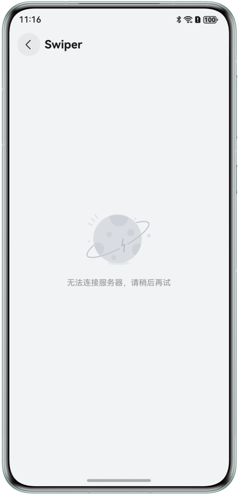 |
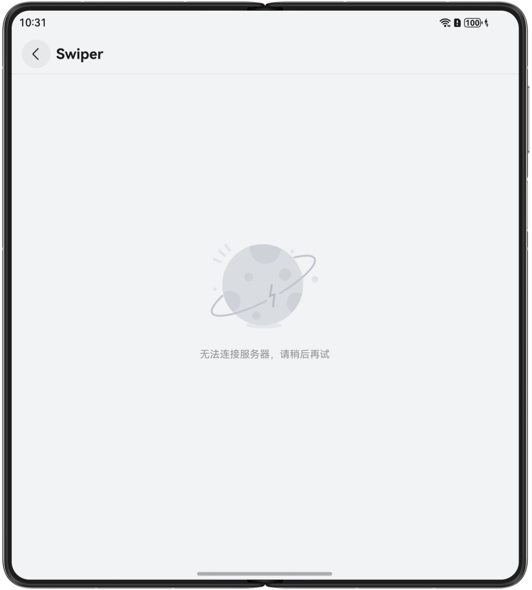 |
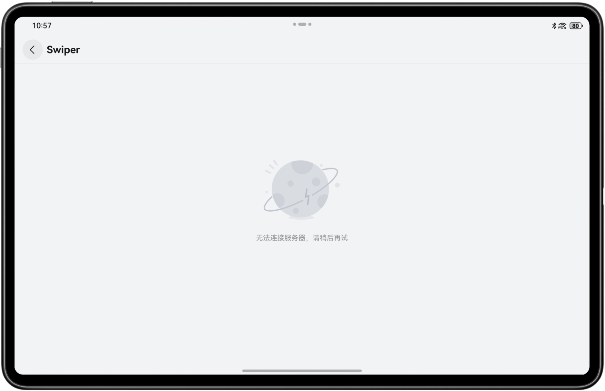 |
The implementation is as follows:
// common/src/main/ets/view/NoNetworkView.ets
export function NoNetworkView(breakpoint: BreakpointTypeEnum, handleReload?: () => void) {
GridRow({ columns: { sm: ColumnEnum.SM, md: ColumnEnum.MD, lg: ColumnEnum.LG } }) {
GridCol({
span: { sm: CommonConstants.SPAN_4, md: CommonConstants.SPAN_6, lg: CommonConstants.SPAN_6 },
offset: { sm: 0, md: 1, lg: CommonConstants.SPAN_3 }
}) {
Column() {
Column() {
Image($r('app.media.ic_failure'))
.width(new BreakpointType({
sm: $r('app.float.failure_size_sm'),
md: $r('app.float.failure_size_md'),
lg: $r('app.float.failure_size_lg')
}).getValue(breakpoint))
.aspectRatio(1)
// ...
}
// ...
}
}
}
}
This article introduces the multi-device adaptation process in HarmonyOS Code Workshop through typical scenarios including the component, sample, practice, and component detail pages. The typical scenarios for several commonly used components during multi-device adaptation are as follows:
This article provides only a brief presentation of the key code. See the project source code for details.